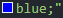
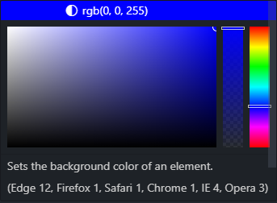
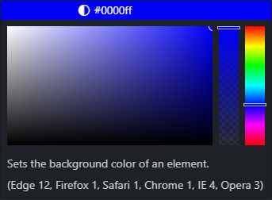
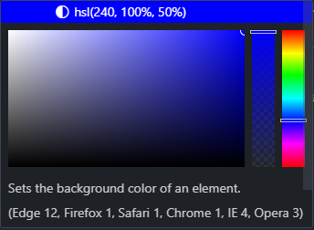
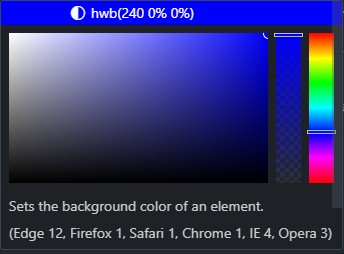

Essa é a forma mais básica de representar Cores usando a CSS você simplesmente seleciona qual cor quer utilizar através do seu nome "blue" para azul "yellow" para amarelo "green" para verde "red para vermelho "white" para branco "black" para preto etc
Essa é outra forma de representar cores, aqui você seleciona a cor através do simbolo de jogo da velha, que vai indicar que o metodo de seleção sera uma combinação em numeros Hexadecimais ou seja você vai declarar qual é o conjunto de numeros entre 0, 1, 2, 3, 4, 5, 6, 7, 8 e 9, a, b, c, d, e, f que representa a cor que sera usada
Essa é a forma que usa "Vermelho Verde Azul" aqui você vai utilizar a quantidade de vermelho verde e azul para selecionar a cor que vai ser usada; e como o nome do metodo implica primeiro você declara em valor numerico a quantidade de vermelho que a cor possui, depois a quantidade de verde e por fim a quantidade de azul e essa "combinação" vai selecionar a cor que você quer. No caso de uma cor vermelha forte a combinação (seria 255. 0, 0) viu 255 é o valor maximo que uma cor pode ter então ficou (maximo de Vermelho, nada de Verde, nada de Azul)
Esse é o metodo MATIZ SATURAÇÃO LUMINOSIDADE tradução do hsl basicamente esse método você vai declarar os valores que representam a cor que você quer usar através da Matiz, onde o valor declarado é numerico normal, Saturação, onde o valor declarado é porcentagem, Luminosidade, onde o valor declarado é Porcentagem; O conjunto desses valores declarados selecionara a cor
Para que você não precise depender de recursos externos para saber quais são os valores caso queria representar cores usando os métodos rgb hexadecimais e hsl faça uso desse maçetão. Primeiro você declara o nome da cor
Ai você vai ciclar na caixa que representa a cor e nela você vai se deparar com isso
Esse é o que eu chamo de "Painel de Controle de cor" nele você podera além de manipular qual a tonalidade da cor que você já declarou na parte mais larga, vai pode manipular a ocapidade (transparencia) da cor na parte quadriculada e vai poder manipular a propria cor em si na parte ao canto. e note que acima dessas três partes há um local que esta escrito rgb que possui os valores da cor que você escolheu já para o método rgb se você não clicar em nada nesse painel tudo permanecera o mesmo mas se você interagir com ele a manipulação que você fizer já vai alterar o metodo do nominal para o rgb e se você quiser outro método é só clicar na parte onde esta o rgb que você tera os metodos hexadecimal, hsl e hwb sendo o último método um padrão CSS4 e ai ao escolher o método que você quer usar é só manipular o que quiser ou sair do painel que o método selecionado vai subistituir o método nominal onde tudo começou.
método hexadecimal 
método hue saturation lightness 
método hue whiteness blackness 
Esse é um metodo de desenvolvimento de cor que é um padrão sugerido na CSS4 e sua estrutura é indentica a do método hsl nele você declara três valores numericos sendo o primeiro o valor da matiz da cor, numero normal, depois você declara a "branqueza" da cor com um valor em porcentagem e você declara a "negreza" da cor com valor em porcentagem também ai o conjunto desses três valores vai de dar o resultado representando a cor no método Hue Whiteness Blackness. Esse método ainda não é suportado pela HTML mas será em breve então é bom saber 🤏
Lembresse que as manipulações que você fizer na transparencia de uma cor vai mudar o nome dos metodos rgb para rgba e hsl para hsla sendo que alpha(alfa) é o indicador de que a cor possui opacidade(transparencia)
Navegador ENTENDIMENTO